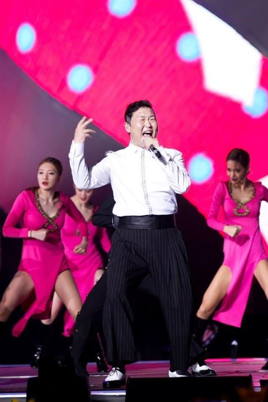

금수저 걸그룹의 탄생
MOREYG의 역사
과거 서태지와 아이들의 멤버였던 양현석이 프로듀싱 등을 맡아 운영하는 연예 기획사. 최신 트렌드를 선도하는 연예인들이 많이 소속되어 있다. 킵식스라는 그룹이 처음 데뷔했지만 아찔한 실패를 맛보고, 이후 지누션이 대박을 터트리고 1TYM도 성공하면서 힙합 레이블로서의 입지를 다졌다. 2000년대 초반 들어 렉시나 M-boat와의 제휴를 통한 휘성, 거미, 빅마마 등의 계속적인 성공과 함께 SE7EN, 빅뱅의 대 성공과 2NE1의 연타석 홈런으로 현재 가요계 3대 기획사 중 하나로 성장했다.
초창기에는 힙합의 성향을 크게 보이다가, SE7EN의 데뷔와 M-Boat 소속 R&B가수들의 데뷔를 통해 흑인음악 전반으로 확장된다. 빅뱅과 2NE1 등의 아이돌이 배출되었지만 이들도 힙합이나 흑인음악을 베이스로 (최근 세계적 추세에 따라 일렉트로니카 사운드도 많이 혼합된) 한 음악이므로 정체성을 내던지지는 않았다.
2010년 8월 23일 싸이가 YG로 이적했다. 자기 기획사를 운영할 때 양현석 사장이 많이 도와줬는데, 아예 그냥 밑으로 들어갔다. 또한 같이 작곡하던 언타이틀의 유건형도 같이 들어갔다. 이로인해 YG는 음악적 폭과 더불어 무시무시한 공연기획력도 함께 얻게 되었다. 이후 에픽하이에서 무소속 멤버였던 DJ 투컷과 미쓰라진을 영입하면서 다른 기획사보다 다소 약했던 가수의 라인업을 보강하였다
2012년 3월 15일에는 YG USA지사와 YG 홍콩지사를 설립했고 바로 4개월 뒤에 발표한 게 강남스타일. 그리고 2012년 싸이의 강남스타일이 국내외로 엄청난 인기를 얻으면서 YG의 위상 또한 상승하며 주가가 업계 1위인 SM을 추월하는 등 큰 약진을 거두었다.[4] 명심해야 할 것은 싸이를 키우고 성공으로 이끈 게 YG라는 점이다. 물론 싸이를 키운 건 YG가 아니지만 싸이의 강남스타일의 성공엔 YG의 역할이 혁혁했다. 강남스타일이 전세계적인 히트를 치게 된 결정적 요인은 곡보다는 뮤직비디오였고 이 뮤직비디오를 양현석이 직접 감수하고 편집에 참여했다는 점, 그리고 이 뮤직비디오가 해외 K-POP 팬 조회수 1,2위를 다투는 YG의 유투브와 각종 SNS 창구를 통해 입소문을 타게 됐다는 점 등을 고려해본다면 YG의 역할도 상당분을 차지했음을 알 수 있다.
음악적 성격
빅뱅(아이돌)에서는 GD, 태양, 승리, T.O.P,대성, 악동뮤지션에서는 이찬혁, WINNER에서는 강승윤, 송민호, 이승훈과 전맴버였던 남태현도 프로듀싱을 하고, iKON에서는 B.I, 바비, 구준회가 주로 작사작곡 한다. 지디는 이미 검증받은 아티스트이고, 에픽하이의 타블로는 힙합씬에서 힙합+타장르라는 독보적인 작곡능력과 원톱으로 평가받는 작사능력, 투컷 또한 뛰어난 비트 메이킹을 보여주고 있다. 이찬혁 역시 신선한 감각으로 대중을 놀라게 했다. 강승윤은 락 장르 뿐만 아니라 다양한 장르를 대중적으로 거부감없이 만들어내는 능력이 뛰어나다.[15] 비아이는 후크 멜로디가, 바비와 송민호는 가사가 뛰어나다. 2NE1에서는 CL이 2집 수록곡 5곡의 작사,작곡에 참여했다. 아티스트들이 자작곡을 만들려고 노력은 하고 있지만, 회사전체 음악 스타일은 여전히 테디라는 의견이다. 특히 블랙핑크의 데뷔와 음악적스타일이 '2NE1의 아류'라는 평과 함께, 테디스런 스타일에서 벗어난, 음악적 쇄신을 원하는 팬들도 늘어나는 실정이다.
현재 소속은 핵심인 Teddy, Perry(거의 휴지기급), 지드래곤 등을 필두로 미국 언더에서 활동하다 테디와의 인연으로 영입돼 최근 앨범들에 부지런히 참여중인 Choice37, 세븐과 승리 솔로앨범 및 에픽하이 7집에 참여한 최필강(PK), 2NE1 앨범에 참역하기도 한 리디아, 태양의 I Need A Girl을 만든 휘성 친구로도 유명한 전군, 마스터 우, 함승천, 강욱진, DAVIRDAY, 로빈, 이대성 (BIGTONE), 장석준, 정용준, 조성확, D.EEP(=박한범), DJ Murf, Peejay, 서원진 등이 있다.
소속 프로듀서
Teddy
말이 필요없다(...) 그가 물러나면 YG 프로듀서 인력의 절반을 잃게 된다(...) 아니 거의 90%는 날아간다 와이지 산하 레이블 '더블랙레이블' 대표이사이기도 하다.
KUSH
테디와 함께 YG 전성기를 열었던 프로듀서. 원래 스토니 스컹크 소속이었다. 한 때 테디와 찰떡콤비를 이루어서 많은 작품을 했다가 중간에 회사를 나간 것으로 알려졌다. 하지만 금방 복귀했고, 이후 다시 YG 가수들에게 곡을 열심히 주고 있다. 외부작곡도 활발한데 특히 자이언티와 작업을 같이 하고 있다. 한편 테디가 새로 만드는 산하 레이블에 프로듀서로 있었다
페리
2010년 이후로 아예 활동이 없어서 생존여부도 불분명 하다(...) 2010년 2NE1의 Can't Nobody 영어버전을 작사했다는 썰이 있었으나 저작권협회 확인 결과 테디가 한 것으로 드러났다. 현재는 활동이 지나칠 정도로 없다. http://hiphople.com/kboard/7938232 이 게시글을 참고해 보면 그의 가족들도 연락이 안 되는 듯.
싸이
싸이의 프로듀싱 능력은 그다지 좋은 소리를 듣지는 못하는 편이다. 남의 곡을 본인 스타일로만 써준다는 게 주요 지적. 서인영의 '신데렐라'와 DJ DOC '나 이런 사람이야' 등은 꽤 히트했으나 서인영의 리듬속으로, 토니안의 탑 스타 등 참여한 곡 상당수는 그저그런 적당한 한철 곡으로 남아버렸다. 현재 1인 기획사 설립을 계획하고 있어 YG와 결별 가능성이 생겼다.
타블로
YG에서 프로필을 음악PD로 바꿨다. 하지만 작사가로서 타가수와의 작업도 많은 편. 최근에 최필강과 외부작업으로서 걸그룹 '라니아'의 타이틀곡을 프로듀싱하였다. 또 이하이, 태양의 앨범에서도 3곡의 작사를 하는 등 작사가로서 더 활발히 활동 중이다. 하지만 에픽하이 앨범 내에서의 작곡, 편곡 지분은 반대로 YG 프로듀서들에게 넘어가버렸다. 이 후 에픽하이 8집 신발장에서 작곡, 편곡 지분을 거의 회복하였다. 현재 YG산하 레이블 하이 그라운드의 대표이기도 하다. 차기 이하이 앨범의 제작책임자를 맡고 있다.
DJ Tukutz
YG에서의 예명은 그냥 투컷이다. YG와 계약 전에는 에픽하이에서의 곡 작업 비중도 많은 편이었는데 YG에 이적하고 나서부터는(...) 그나마 Born Hater는 이 분이 만드셨다. 아직 건재하다. 그리고 훅 부분은 젊은 피를 수혈하자고 B.I의 힘을 빌렸다.
Happy Face (최필강+BIGTONE)
승리 솔로앨범을 프로듀싱하고 2NE1의 앨범에도 참여하였다. 같은 그룹 소속인 BIGTONE도 프로듀싱에 참여하기도 한다. 태양의 'Connection'과 2NE1의 '난 바빠'는 그들의 작품이다. 그런데 얼마 전에 에픽하이의 7집을 프로듀싱 했다가 하이스쿨러들에게 듣보잡이 에픽하이를 망쳐놨다고 가루가 되도록 까였다(...) 사실 사운드 자체는 정말 잘 뽑았는데 말이다. 여담으로 이 두 사람의 가수로서의 소속사는 달샤벳이 있는 해피페이스엔터테인먼트다. 그래서 빅톤은 달샤벳 피쳐링도 했다.
함승천
WINNER의 데뷔앨범인 2014 S/S collection 중 '컬러링', '끼부리지마', '사랑하지마'에 참여하였다.